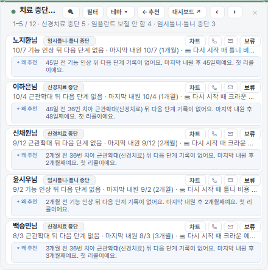

치료중단 환자, 다 전화하면 올까요?
아니요, 다 걸어도 다 오지 않아요. 오래 지난 분은 이미 다른 치과에서 치료를 끝냈을 때가 많아요. 골든타임 안에, 우리 치과에 마음이 남아 있는 분부터 거는 게 훨씬 잘 채워져요.
명단 전체에 거는 리콜의 현실
현장에서는「이미 다른 치과에서 했어요」 「다시 전화하지 마세요」 하고 끊기거나, 아예 안 받으시는 경우가 많아요. 몇 시간 돌려도 예약으로 이어지는 건 몇 명 안 되고, 데스크는 지치고, 환자분은 불편해하세요.
치료중단 리콜이 안 되는 이유는 대부분 타이밍과 대상이에요. 아픈 이를 그대로 두고 오래 버티는 분은 많지 않아요. 시간이 지날수록 다른 치과에서 이미 치료를 끝냈을 가능성이 커져요.
꿀팁 1 · 골든타임 안에 거세요
치료를 멈춘 지 얼마 안 됐을 때가 가장 잘 돌아오세요. 현장 경험으로는 멈춘 지 몇 달 안이 골든타임이고, 2년쯤 지난 분은 전화해도 예약으로 이어지는 일이 드물었어요. 그래서 명단을 멈춘 지 오래되지 않은 순서로 보는 게 먼저예요.
실제 기록으로 보면데스크알리미를 만든 치과의 지난 리콜 전화 747번을 되짚어 보니, 마지막 내원이 3개월 안인 분은 전화 뒤 60일 안에 29%가 오셨고, 그보다 오래된 분은 9%였어요. 같은 전화 한 통이라도 때에 따라 세 배 넘게 차이 나요.
꿀팁 2 · 「올 생각이 있는 분」을 먼저
- 그동안 우리 치과에 꾸준히 오셨던 분
- 취소할 때 「다시 연락 주세요」 「나중에 할게요」처럼 다시 올 여지를 남긴 분
- 신경치료·임시치아처럼 다음 단계가 꼭 필요한 치료가 멈춘 분 — 그냥 두면 불편해지니 전화가 고맙게 들려요
반대로 「다시 전화하지 마세요」라고 하신 분은 명단에서 빼 두세요. 같은 분께 또 거는 게 치과 인상을 가장 나쁘게 만들어요.
무엇이 멈췄는지 알고 거세요
그대로 읽으면 되는 멘트○○님, 지난번 신경치료 하시고 다음 단계를 아직 안 하셔서 연락드렸어요. 그대로 두시면 치아가 약해질 수 있어서요. 편하신 날 말씀해 주시면 바로 잡아 드릴게요.
「예약 안 하셨죠?」보다 언제, 몇 번 치아, 무슨 치료가 어디까지 됐는지를 먼저 말하면, 환자분이 「아 맞다」 하고 이야기가 이어져요.
「치료하던 치아가 안 좋은 상태여서 확인하러 오셔야 해요」 — 겁주는 말로 들려요
「4월 10일 12번 치아 신경치료 하시다가 내원이 없으셔서 연락드렸어요. 신경치료는 중단 없이 이어 가시는 게 좋아요」
발치하고 안 오시는 분은 비용 걱정인 경우가 많아요. 「우선 안 아프게 해 드릴게요」, 「한꺼번에 다 하지 않으셔도 돼요, 제일 급한 것부터」처럼 부담을 덜어 드리면 마음이 열려요.

자주 묻는 것
치료중단 환자 골든타임은 얼마예요?
치과마다 다르지만, 데스크알리미를 만든 치과의 리콜 전화 747번 기록에서는 마지막 내원 3개월 안인 분이 60일 안에 29% 오셨고 그보다 오래된 분은 9%였어요. 2년쯤 지난 분은 현장에서도 예약으로 이어지는 일이 드물었어요.
「다른 치과 갔어요」 하시면요?
「불편하신 데 없으시면 다행이에요, 다음에 필요하실 때 편하게 연락 주세요」로 짧게 끝내고, 다시 전화하지 않도록 표시해 두세요.
데스크알리미로는 이렇게
리콜 [테마 ▾]에서 「치료 중단 · 6개월」을 누르면 최근에 멈춘 분만 남아요. 같은 치료중단이라도 우리 치과에 다시 올 가능성이 높은 분(검진 다니시던 분·단골·최근에 멈춘 분)이 위로 올라와요. 줄마다 왜 추천(무슨 치료가 어디서 멈췄는지)이 적혀 있고, 카드를 열면 첫마디가 초록 상자에 있어 그대로 읽으면 돼요. 「원치 않음」을 누른 분은 다시 뜨지 않아요.
데스크알리미 = 덴트웹 쓰는 치과 데스크 화면 구석에 뜨는 막대형 도우미예요. 덴트웹은 그대로 쓰고 옆에 하나만 더 띄워요.
올린 날 2026-11-23 · 고친 날 2026-11-23